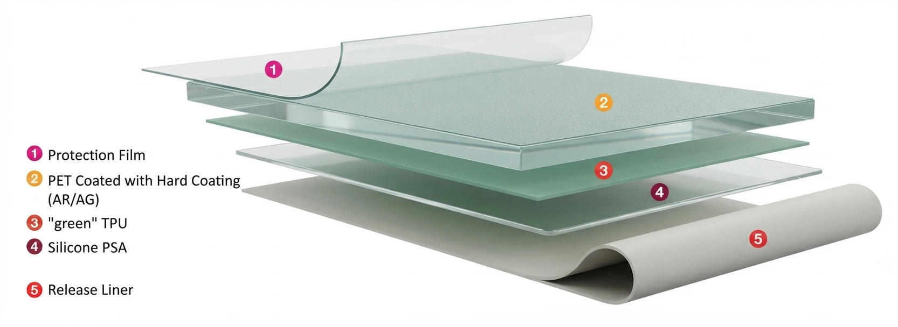
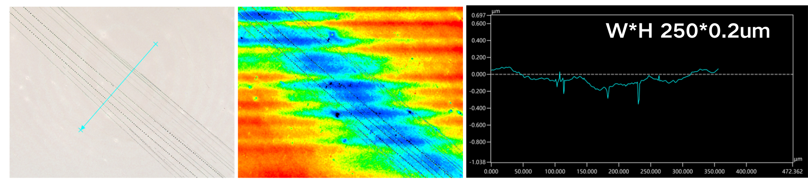
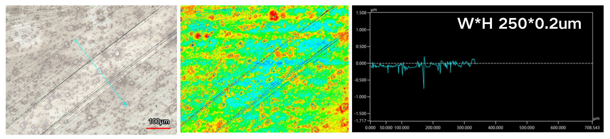
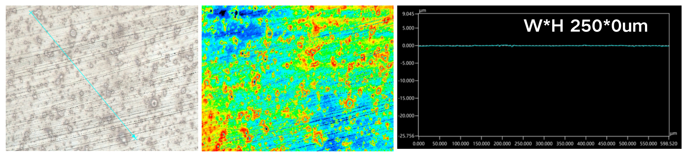

1. High-Performance Optical Film Architecture and Design
1.1 Multi-Layer Composite Structure
Representative Layered Architecture:
As illustrated in the schematic structure, the optical protective film is engineered with a sophisticated multi-layer configuration (which can be further tailored or expanded based on specific functional demands):
Protection Film (Layer 1): Shields the top functional surface prior to application.
Hard-Coated PET Film (Layer 2): The core functional substrate coated with Hard Coating providing Anti-Reflective (AR) and/or Anti-Glare (AG) functionalities.
Green TPU Layer (Layer 3): Our synthesized eco-friendly, high-performance TPU acting as the core high-impact-resistant layer.
Silicone PSA (Layer 4): Silicone Pressure-Sensitive Adhesive designed for reliable bonding and bubble-free attachment to electronic screen glass.
Release Liner (Layer 5): Protects the adhesive layer before installation.

Figure 1: Typical 5-layer composite structure of the optical protective film integrating Green TPU.
1.2 Core Performance Requirements for Screen Protection
Target Application:
Designed specifically for advanced electronic device screen protection, demanding rigorous optical-grade quality and mechanical durability.
Three Pillar Requirements:
Impact Resistance: Leveraging the unique energy-dissipating Green TPU layer to protect screens from drops and localized shocks.
Anti-Nail Scratch Performance: Resisting everyday marring, indentation, and fingernail scratching during active use.
High Transparency: Maintaining exceptional visual clarity, high transmittance, and anti-reflective/anti-glare synergy without optical distortion.
TipPart 2: Impact Resistance
2. Drop-Weight Impact Performance and Energy Absorption
2.1 Drop-Ball Impact Testing & Video Demonstration
Experimental Setup:
Drop-weight impact resilience was tested using a standard steel ball (\(m = 11\,\text{g}\), diameter \(d = 14\,\text{mm}\)).
Two comparative dynamic videos demonstrate the exceptional shock absorption of our protective film system:
Direct Glass Impact: Bare glass plate subjected to impact.
Composite Film Impact: The engineered film structure (\(50\,\mu\text{m}\) PET / \(100\,\mu\text{m}\) Green TPU) applied on substrate.
Comparative Resilience Data:
Bare Glass Plate: Released from a height of \(220\,\text{mm}\) (impact energy of \(23.7\,\text{mJ}\)), yielding a high rebound height of \(83\,\text{mm}\).
PET/TPU Composite Film: Tested under a much harsher condition with a release height of \(550\,\text{mm}\) (impact energy of \(55\,\text{mJ}\)), yet the rebound height drops drastically to just \(5\,\text{mm}\)—indicating that the vast majority of kinetic energy is efficiently dissipated and absorbed by the protective composite.
Video 1: Steel Ball Impact on Bare Glass
Video 2: Steel Ball Impact on PET/Green TPU Composite
Figure 2: Drop-ball impact performance comparing bare glass with the Green TPU optical composite.
2.2 Ultra-Thin Design and Structural Optimization
Strict Thickness Constraint:
For practical electronic screen protection applications, the total thickness of the functional film (including the PET, Green TPU, and PSA layers) must be strictly controlled within \(150\,\mu\text{m}\).
Multilayer Synergy:
Meeting high-end anti-impact standards within such a constrained ultra-thin profile is extremely challenging. By systematically tuning the viscoelastic and mechanical properties of the Green TPU alongside optimized interfacial layer design, the film successfully achieves superior shock resistance and energy damping without sacrificing thickness limits.
TipPart 3: Anti-Nail Scratch Performance
3. Anti-Nail Scratch Resistance and Self-Healing Behavior
3.1 Testing Criteria & Benchmark Comparison
Testing Methodology:
Evaluated using a Keyence VK3000 3D laser scanning microscope to measure surface 3D topography and indentation profiles after a standardized fixed force is applied and dragged across the surface.
Industry Standard for Qualification:
The qualification threshold requires that the residual scratch dimensions (Width \(\times\) Depth) must not exceed that of a conventional qualified reference standard (\(250 \times 0.2\,\mu\text{m}\)), or that deep initial indentations must rapidly recover to within acceptable specifications. (Note: Conventional qualified reference samples typically pass the nail scratch test but fail rigorous anti-impact requirements).

Figure 3: 3D profile and cross-sectional depth of a conventional qualified sample (\(W \times H: 250 \times 0.2\,\mu\text{m}\)).
3.2 Performance of Green TPU Optical Film & 9-Day Recovery
Immediate Test Results:
As demonstrated by the Keyence 3D profile in Figure 4, our Green TPU composite film fully satisfies the strict criteria right after testing, matching the standard threshold (\(250 \times 0.2\,\mu\text{m}\)) while simultaneously retaining superior impact resistance.

Green TPU Initial Scratch Profile
Figure 4: Keyence 3D morphology and depth profile of the Green TPU film showing initial compliance.
Remarkable Self-Healing Phenomenon (Day 9):
Even more remarkably, due to the exceptional viscoelasticity and delayed elastic recovery endowed by our tailor-made network architecture, the 3D profile measured on the 9th day reveals that the scratch marks completely vanished, with the depth successfully reducing to \(0\,\mu\text{m}\) (\(250 \times 0\,\mu\text{m}\)).
This highlights an outstanding long-term surface resilience and self-healing synergy ideal for daily electronic device usage.

Green TPU Recovery Profile on Day 9
Figure 5: Keyence 3D morphology and depth profile of the Green TPU film showing complete scratch disappearance after 9 days.
The light transmittance across the visible spectrum (\(400 - 700\,\text{nm}\)) was thoroughly evaluated for various single-layer and composite film configurations using spectrophotometry.
Tested Configurations in Spectrum:
Black Curve: Single-layer HC PET (\(50\,\mu\text{m}\)).
Green Curve: Pure Green TPU (\(30\,\mu\text{m}\), H40).
Red & Blue Curves: Composite structures of PET/H40 at different thicknesses (\(80\,\mu\text{m}\) and \(65\,\mu\text{m}\), respectively).
Figure 6: Light transmittance comparison across the visible light spectrum (\(400 - 700\,\text{nm}\)) for PET, Green TPU, and their composite structures.
4.2 Key Optical Insights: High Transparency & Anti-Reflection Synergy
Superior Transmittance of TPU:
As clearly indicated by the spectral curves, the configurations incorporating the Green TPU layer (both pure H40 and PET/H40 composites) consistently exhibit significantly higher transmittance across nearly the entire visible range compared to the baseline HC PET film.
Anti-Reflection & Enhancement Effect:
More importantly, the integration of the tailored Green TPU layer achieves an optical enhancement effect, minimizing internal reflection losses and preserving exceptional visual clarity, which is essential for high-end electronic display protection without causing chromatic aberration or image distortion.
ImportantPart 5: Summary
5. Summary of High-Performance Optical Protective Film
5.1 Core Technological Achievements & Advantages
Optimized Multi-Layer Architecture:
Successfully designed and evaluated an advanced optical protective film structure (within a strict total thickness limit under \(150\,\mu\text{m}\)) integrating a hard-coated PET functional layer, our bespoke Green TPU impact-absorbing layer, and a silicone PSA bonding layer.
Exceptional Impact Resilience:
Demonstrated superior shock absorption during drop-weight impact tests (e.g., absorbing the vast majority of kinetic energy and drastically reducing the rebound height to \(5\,\text{mm}\) compared to bare glass), successfully fulfilling rigorous electronic screen protection requirements.
Fully complied with stringent surface indentation criteria initially, and featured a remarkable long-term recovery capability where scratch marks completely vanished (reaching a depth of \(0\,\mu\text{m}\)) by the 9th day due to excellent viscoelastic network design.
Superior Optical Clarity & Anti-Reflection:
Exhibited high luminous transmittance across the visible spectrum (\(400 - 700\,\text{nm}\)), providing an unexpected optical enhancement (anti-reflective) synergy when composited with PET substrates.